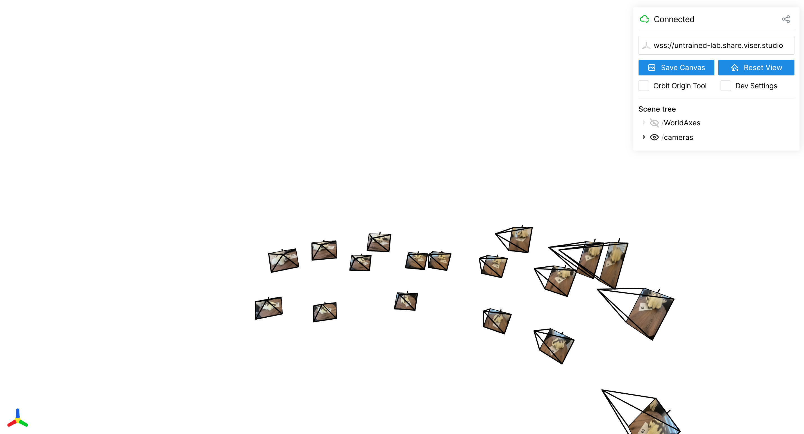
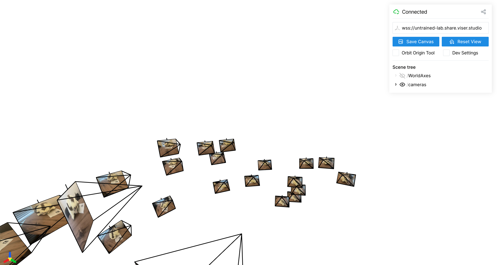
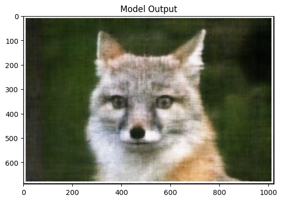
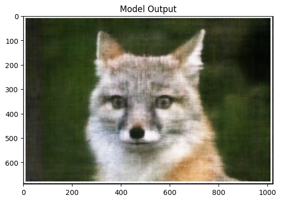

Project Four: Neural Radiance Field
Part 0 Calibrating Your Camera and Capturing a 3D Scan
 
Part 1: Fit a Neural Field to a 2D Image
Model Architecture: 4 layers, 256 nodes per layer, learning rate 0.01, batch size 10000, 1000 gradient steps.
Training Progression Visualization (Epoch 0, 5, 10, 14)


Training Progression Visualization (Epoch 0, 10, 20, 40)


Max positional encoding = 4, 10 (columns); width = 128, 256 (rows)
 


PNSR curve for training of fox image.

Part 2: Fit a Neural Field to a 2D Image
First I implemented the RaysData class with serves as a dataset. Given a tensor of images to train on, the camera matrix, and the camera to world matrices corresponding to the images, the class would provide a dataset that provides batches of points in 3D space, directional vectors and pixel colors.
Then I created a model to train, which was modeled after the one in the specs. It takes in positionally encoded values of rays_o (points in 3D space) and runs it through the model. It also reintroduces the same input in the middle of the model so the original inputs are not lost. The model then branches into 2 parts to learn the density and color of the pixels. For the density branch, rays_d is fed into the model.
To train the model, get batches of rays_o, rays_d, and pixel tensors from the dataset. Then for each rays_o, rays_d, sample points along the ray and then positionally encode them and batch all the results together and send them through the model. The loss is caluculated by comparing the predicted pixel intensities (derived by using the volrend function on the outputted values) with the given pixel intensities. Then backpropagation occurs.
To show the images, rays are computed based off of c2ws_test and then used as inputs to the learned model. The outputted pixels are then combined into an image and shown.
Sample along rays takes a point and a direction and adds the direction vector to the point n times, with some randomness added to reduce overfitting.
Volrend is implemented by converting densities to alphas, computing accumulated transmittance along the ray, forming NeRF weights, and summing weighted RGBs to produce final pixel colors.
Rays are derived from c2ws by undoing the camera projection and then mapping those directions into world space. Each pixel (u,v,1) is multiplied by the inverse intrinsic matrix K_inv to convert it into a direction vector in the camera's coordinate frame. That camera-space direction is then rotated into world coordinates using the rotation part of the camera-to-world matrix, and normalized. The ray origin for all pixels is simply the camera position given by the translation vector of the pose matrix.
Visualization of rays and samples with camera

Training Progression Visualization


PNSR Curve

Spherical rendering video of the Lego

Part 2: Fit a Neural Field to a 2D Image
I was unable to successfully create a rendering from real data


I changed near and far from 2 and 6 to 0.5 and 2. I increased max positional encoding from 10 to 16.